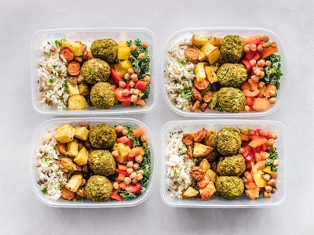
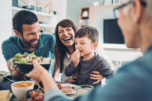

How Dinners on a Dime Got Started
We can all relate to the mountain of questions we ask ourselves each morning, some of
those questions for me reference the end of my day. What am I going to make for dinner?
Do I have all the ingredients? Will I have time to make dinner? I often reflect on my days as a full-time
mother of 3 kids, struggling to be a good mother, while still working a job that left me exhausted. Coming
home to hungry and cranky children stressed me out, then knowing I had to cook something stressed me out
even more. That is until I started prepping my meals ahead of my weeks with freezer meals. Seeing and
personally feeling the success of these preperations made me realize how many others I could help,
therefore, Dinners on a Dime was born.

Our Why
We believe that dinner time is more than a meal, but moments we are given to connect
and thrive in our relationships.
We want you to have more of those moments of connections, by making your meal time less stressful and more
enjoyable. We hope to bring you peace, comfort, and encouragment that you are doing a good job. We hope to
aid you in re-discovering the joy of Dinners.

Our Goal
Our goal is to help you feel less stressed about mealtime after a long and busy day.
Our goal for you is to give you the tools you need to feel confident in your ability to prepare, make and
enjoy dinner time.